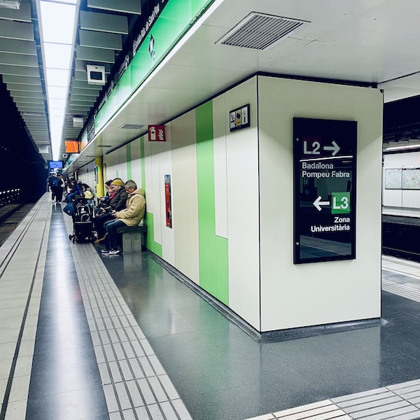

🔀 Cross-Platform

🇺🇸
12th Street Oakland
🇺🇸
19th Street Oakland
🇬🇧
Acton Town
🇳🇱
Amstel
🇳🇱
Amsterdam Zuid
🇵🇹
Baixa-Chiado
🇬🇧
Baker Street
🇬🇧
Barons Court
🇧🇪
Beaux-Arts
🇧🇪
Beekkant
🇺🇸
Belmont
🇩🇪
Berlin East
🇩🇪
Bornholmer Straße
🇵🇹
Campo Grande
🇪🇸
Casa de Campo
🇫🇷
Châtelet-Les Halles
🇺🇸
City Hall
🇺🇸
DeKalb Avenue
🇬🇧
Elmers End
🇺🇸
Erie
🇬🇧
Euston
🇬🇧
Finchley Road
🇬🇧
Finsbury Park
🇺🇸
Fullerton
🇧🇪
Gare de Bruxelles-Midi
🇫🇷
Gare de Lyon-Perrache
🇫🇷
Gare du Nord
🇺🇸
Girard
🇬🇧
Hammersmith
🇬🇧
Highbury and Islington
🇺🇸
Howard
🇺🇸
Hoyt–Schermerhorn
🇺🇸
Jay Street–MetroTech
🇺🇸
Journal Square
🇺🇸
Kenmore
🇷🇺
Kitay-Gorod
🇫🇷
La Motte-Picquet–Grenelle
🇦🇹
Längenfeldgasse
🇺🇸
Lexington Avenue–63rd Street
🇨🇦
Lionel-Groulx
🇫🇷
Louis Blanc
🇺🇸
MacArthur
🇩🇪
Mehringdamm
🇬🇧
Mile End
🇺🇸
Millbrae
🇩🇪
Nollendorfplatz
🇺🇸
North Station
🇺🇸
Olney Transportation Center
🇯🇵
Omotesandō
🇬🇧
Oxford Circus
🇪🇸
Paral·lel
🇫🇷
Perrache
🇺🇸
Pittsburg/Bay Point
🇪🇸
Príncipe Pío
🇺🇸
Prospect Park
🇺🇸
Queensboro Plaza
🇺🇸
Race-Vine
🇺🇸
Seventh Avenue
🇯🇵
Shinjuku
🇨🇦
Snowdon
🇺🇸
Spring Garden
🇬🇧
Stockwell
🇬🇧
Stratford
🇨🇦
Toronto Union Station
🇩🇪
Treptower Park
🇪🇸
Tres Olivos
🇬🇧
Turnham Green
🇦🇪
Union
🇺🇸
Walnut-Locust
🇧🇪
Waterloo
🇬🇧
Wembley Park
🇺🇸
Wilson
🇩🇪
Wittenbergplatz
🇩🇪
Wuhletal
🇭🇰
Admiralty station
🇯🇵
Akasaka-Mitsuke
🇸🇪
Alvik station
🇯🇵
Amagasaki
🇮🇳
Anand Vihar
🇷🇴
Basarab station
🇸🇬
Bayfront
🇨🇳
Beijing West
🇩🇪
Bensheimer Straße
🇮🇳
Botanical Garden
🇧🇷
Brás
🇮🇹
Cadorna FN
🇮🇳
Central Secretariat
🇲🇾
Chan Sow Lin
🇦🇺
Chatswood
🇹🇼
Chiang Kai-shek Memorial Hall
🇸🇬
City Hall
🇯🇵
Daikokuchō
🇹🇼
Dongmen
🇮🇷
Eram-e Sabz
🇸🇪
Gamla Stan
🇰🇷
Geumjeong
🇰🇷
Gimpo Airport
🇨🇳
Guogongzhuang
🇹🇼
Guting
🇨🇳
Hongqiao Airport Terminal 2
🇨🇳
Hongqiao Railway
🇦🇺
Ipswich
🇸🇬
Jurong East
🇷🇺
Kashirskaya
🇯🇵
Kudanshita
🇷🇺
Kuntsevskaya
🇲🇾
Kwasa Damansara
🇭🇰
Lai King
🇯🇵
Misasagi
🇭🇰
Mong Kok
🇷🇺
Moskovskaya
🇨🇳
Nanluoguxiang
🇨🇳
National Library
🇭🇰
New Territories
🇳🇿
Newmarket Station
🇷🇺
Nizhegorodskaya
🇯🇵
Ochanomizu
🇨🇳
Oriental Sports Center
🇧🇷
Osasco
🇧🇷
Paraíso
🇷🇺
Park Pobedy
🇷🇺
Petrovsko-Razumovskaya
🇪🇸
Pinar de Chamartín
🇦🇷
Plaza Miserere
🇧🇷
Presidente Altino
🇭🇰
Prince Edward
🇪🇸
Puerta de Arganda
🇲🇾
Putra Heights
🇸🇬
Raffles Place
🇮🇷
Sadeghieh
🇯🇵
Shirokane-Takanawa
🇹🇭
Siam
🇸🇪
Slussen
🇷🇺
Sportivnaya
🇸🇪
T-Centralen
🇭🇰
Tai Wai
🇷🇺
Tekhnologichesky Institut
🇭🇰
Tiu Keng Leng
🇷🇺
Tretyakovskaya
🇯🇵
Tsuruhashi
🇲🇾
Tun Razak Exchange
🇳🇱
Van der Madeweg
🇨🇱
Vicuña Mackenna
🇦🇺
Woodville
🇹🇼
Ximen
🇮🇳
Yamuna Bank
🇨🇳
Yancun East
🇨🇳
Zhuxinzhuang
{kind=link}